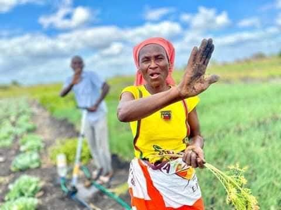
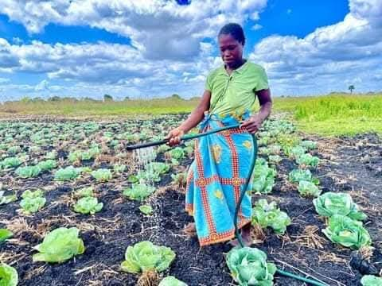
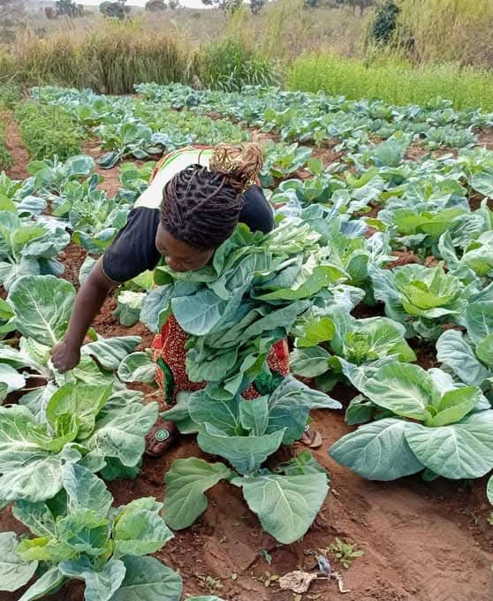

Our Story, Our Mission, Our Vision
  Welcome to Agristream. Our journey began with a simple belief: that healthy food starts with healthy land. Located in the beautiful Vuwani Tshivhulana, our farm is a testament to the power of regenerative agriculture and a deep respect for nature. Every member of our team is dedicated to cultivating food that is not only delicious but also good for you and the planet.
Our Mission
To cultivate high-quality, sustainably grown produce for our community, fostering a deeper connection to our food and the land.
Our Vision
We envision a vibrant local food economy where community members have direct access to wholesome, farm-fresh products.